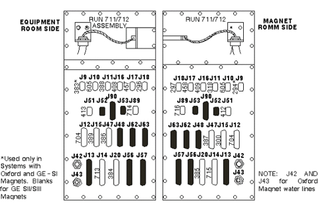
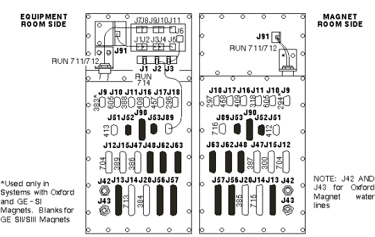

Operating Documentation
Direction 5133315-3, Rev# 14
Signa EXCITE HD 1.5T Service Methods
Module Version 1.0, Version Date 5/3/07
Operating Documentation |
Signa Advantage cables interconnect to cable filter panel as shown in Illustration 1 (for systems without Fiber Optic Repeater) or Illustration 2 (for systems with Fiber Optic Receiver). Refer to Table 1 for destinations.
Illustration 1: CABLE FILTER PANEL (NO FIBER OPTIC REPEATER)

Illustration 2: CABLE FILTER PANEL (WITH FIBER OPTIC REPEATER)

Table 1: CABLE FILTER PANEL INTERCONNECTING CABLES
| PENETRATION PANEL INTER- CONNECTING J# | SIGNA ADVANTAGE 1.5T RUNS | SIGNA ADVANTAGE 1.0T & 0.5T RUNS | ||
| EQUIPMENT ROOM | MAGNET ROOM | EQUIPMENT ROOM | MAGNET ROOM | |
| PP1 J9 (9-PIN FILTER) | BLANK1 | BLANK1 | BLANK | BLANK |
| PP1 J10 (9-PIN FILTER) | 605 TO MR2 A11 J71 | 650 TO MS1 A3 A11 | 605 TO MR2 A11 J7 | 605 TO MS1 A3 A1 |
| PP1 J11 (9-PIN FILTER) | 388 TO PP2 A15 J22 | 318 TO MG3 A7 | 388 TO PP2 A15 J22 | 318 TO MG3 A7 |
| PP1 J12 (25-PIN FILTER) | 704 TO OC1 A10 J9 | 282 TO MG3 A2 J6 | 704 TO OC1 A10 J9 | 282 TO MG3 A2 J6 |
| PP1 J13 (37-PIN FILTER) | BLANK | BLANK | BLANK | BLANK |
| PP1 J14 (37-PIN FILTER) | 713 TO PP2 A15 J23 | 715 TO MG2 A33 J1 | 713 TO PP2 A15 J23 | 715 TO MG2 A33 J1 |
| PP1 J15 (25-PIN FILTER) | 389 TO PP2 A15 J20 | 300 TO MG2 A15 | 389 TO PP2 A15 J20 | 300 TO MG2 A15 |
| PP1 J16 (9-PIN FILTER) | 408 TO PD1 A1 A3 J3 | 409 TO MG2 A12 A1 J7 | 408 TO PD1 A1 A3 J3 | 409 TO MG2 A12 A1 J7 |
| PP1 J17 (9-PIN FILTER) | 457 TO OM1 | 458 TO OM3 | 457 TO OM1 | 458 TO OM3 |
| PP1 J18 (9-PIN FILTER) | 296 TO PD1/EO2 | 297 TO EO1 | 296 TO PD1/EO2 | 297 TO EO1 |
| PP1 J20 (37-PIN FILTER) | 384 TO PP2 A15 J17 | 385 TO MG2 A30 TS1 | 384 TO PP2 A15 J17 | 385 TO MG2 A30 TS1 |
| PP1 J42 (BULKHEAD FITTING) | WATER LINE2 | WATER LINE2 | N/A | N/A |
| PP1 J43 (BULKHEAD FITTING) | WATER LINE2 | WATER LINE2 | N/A | N/A |
| PP1 J47 (25-PIN FILTER) | 386 TO PP2 A15 J21 | 387 TO MG2 A29 | 386 TO PP2 A15 J21 | 387 TO MG2 A29 |
| PP1 J48 (25-PIN CUTOUT) | BLANK | BLANK | BLANK | BLANK |
| PP1 J51 (9-PIN FILTER) | 413 TO PP2 A15 J28 | 412 TO MG3 A32 J1 | 413 TO PP2 A15 J28 | 412 TO MG3 A32 J1 |
Signa Advantage 1.5T, 1.0T, & 0.5T systems, and Signa Advantage1.5T Upgrade Cable Filter Panel interconnecting cables are shown in Table 1 above.
Signa Advantage Upgrade runs that interconnect according to magnet type are listed in Table 2.
Table 2: UPGRADE CABLE FILTER PANEL CONNECTIONS ACCORDING TO MAGNET
| Penetration Panel Inter- connecting J#, Device, & Function | Oxford Magnet | GE S-1 Magnet | GE S-II or GE S-III Magnet | |||
| Equipment Room | Magnet Room | Equipment Room | Magnet Room | Equipment Room | Magnet Room | |
| J9 (9-PIN SUN-D FILTER) NITROGEN METER | RUN 383 TO MR2 A11 J13 | RUN 294 TO MG1 A2 A1 J1 | RUN 383 TO MR2 A11 J15 | RUN 608 TO MS1 | NOT USED | NOT USED |
| J10 (9-PIN SUN-D FILTER) HELIUM METER | RUN 291 TO MR2 A11 J7 | RUN 295 TO MG1 A1 A2 J1 | RUN 291 TO MR2 A11 J7 | RUN 608 TO MS1 | RUN 605 TO MR2 A11 J7 | RUN 605 TO MS1 A3 A1 |
| J42 SHIM COIL WATER | WATER LINE TO WATER SUPPLY | WATER LINE TO SHIM (MG1 A1) | NOT USED | NOT USED | NOT USED | NOT USED |
| J43 SHIM COIL WATER | WATER LINE TO WATER SUPPLY | WATER LINE TO SHIM (MG1 A1) | NOT USED | NOT USED | NOT USED | NOT USED |
| F1, F2, F3, F4 (FILTERS) SHIELD COOLER | NOT USED | NOT USED | NOT USED | NOT USED | RUN 623 TO MS5 A1 | RUN 624 TO MS1 A2 |